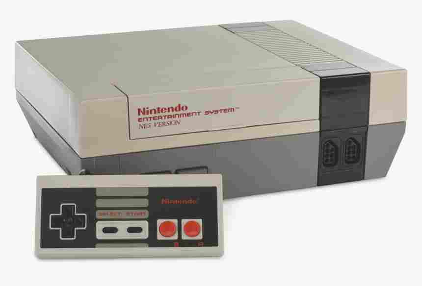

Welcome to the DataDome! To hear a greeting, please use the audio button below!
A personal archive of a little bit of everything!
You will find so many things to interact with, play around with, and have fun with here on the site. I will even include links to other things that I find really interesting, and if I can figure it out
I'll even add some emulators! 
I personally do not want to use my voice here on this because of privacy concerns, so you will have to tolerate hearing our lovely boy SAM speak.
Getting emulators to work on a website is going to be hard though. That stuff ain't easy!
